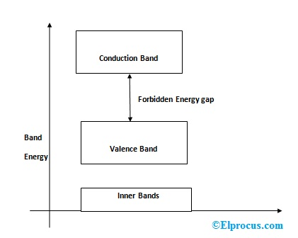

Semiconductor physics deals with the behavior of semiconductors, which are materials with electrical conductivity between that of conductors and insulators. This field explores the properties of energy bands in solids, the behavior of intrinsic and extrinsic semiconductors, and the applications of semiconductor devices like diodes, transistors, and solar cells.
To know more about the topics we are going to learn in this semister, click on Read more Button
1) 𝐄𝐧𝐞𝐫𝐠𝐲 𝐛𝐚𝐧𝐝𝐬 𝐢𝐧 𝐬𝐨𝐥𝐢𝐝𝐬
In solid-state physics, energy bands are ranges of allowed energy levels for electrons in a solid material. These bands arise from the quantum mechanical behavior of electrons in a crystal lattice. The concept is central to understanding the electrical, optical, and thermal properties of materials.
There are two main types of energy bands:
1) Valence Band:
This band represents the range of energy levels occupied by electrons in the ground state at absolute zero temperature. Electrons in this band are tightly bound to the atomic nuclei and are not free to move around the crystal. The valence band is typically filled with electrons in insulators and semiconductors but may be only partially filled in metals.
2) Conduction Band:
Above the valence band lies the conduction band, which contains energy levels that electrons can occupy if they gain enough energy to overcome the energy gap between the valence band and the conduction band. Electrons in the conduction band are free to move throughout the crystal and contribute to electrical conduction. In insulators, there is a large energy gap between the valence and conduction bands, so very few electrons can move into the conduction band. In semiconductors, this gap is smaller, allowing for some conductivity, especially at higher temperatures. In metals, the valence and conduction bands overlap, so electrons can move freely, leading to high electrical conductivity.
2) 𝐈𝐧𝐭𝐫𝐢𝐧𝐬𝐢𝐜 𝐬𝐞𝐦𝐢𝐜𝐨𝐧𝐝𝐮𝐜𝐭𝐨𝐫𝐬
Defination:-
Intrinsic semiconductors are pure semiconducting materials with no intentional impurities added. Examples include pure silicon (Si) and germanium (Ge).
Intrinsic semiconductors have a band structure where the energy gap between the valence band and the conduction band is relatively small, typically on the order of a few electron volts. At absolute zero temperature (0 Kelvin), all electrons are in the valence band, and the conduction band is empty because the electrons do not have enough thermal energy to overcome the band gap and move into the conduction band.
However, as the temperature increases, thermal energy allows some electrons to gain enough energy to jump from the valence band to the conduction band, leaving behind a positively charged hole in the valence band. These mobile electrons and holes contribute to electrical conductivity in the material.
In an intrinsic semiconductor at room temperature, the number of electrons in the conduction band due to thermal excitation is approximately equal to the number of holes in the valence band. This balance between electrons and holes results in a low level of electrical conductivity.
The conductivity of intrinsic semiconductors can be greatly enhanced by introducing impurities through a process called doping. Doping introduces either extra electrons (n-type doping) or holes (p-type doping) into the semiconductor, thereby increasing its conductivity. However, the study of intrinsic semiconductors is fundamental to understanding the behavior of doped semiconductors and forms the basis for many semiconductor devices and technologies.
3) 𝐞𝐧𝐞𝐫𝐠𝐲 𝐛𝐚𝐧𝐝 𝐝𝐢𝐚𝐠𝐫𝐚𝐦

4) 𝐃𝐢𝐫𝐞𝐜𝐭 𝐚𝐧𝐝 𝐢𝐧𝐝𝐢𝐫𝐞𝐜𝐭 𝐬𝐞𝐦𝐢𝐜𝐨𝐧𝐝𝐮𝐜𝐭𝐨𝐫𝐬
1) Direct Semiconductors:
In a direct semiconductor, the minimum energy of the conduction band (Ec) and the maximum energy of the valence band (Ev) occur at the same momentum (k-point) in the Brillouin zone of the crystal structure.
This means that electron transitions between the valence band and the conduction band involve a direct exchange of momentum and energy.
Examples of direct semiconductors include materials like gallium arsenide (GaAs), indium phosphide (InP), and some variants of silicon (Si) and germanium (Ge).
Direct band gap materials are often used in optoelectronic devices like light-emitting diodes (LEDs) and laser diodes because they have efficient radiative recombination.
2) Indirect Semiconductors:
n an indirect semiconductor, the minimum energy of the conduction band and the maximum energy of the valence band occur at different momentum points in the Brillouin zone.
This means that electron transitions between the valence band and the conduction band involve a change in momentum, making the process less efficient.
Examples of indirect semiconductors include silicon (Si) and germanium (Ge) in their pure form.
Indirect band gap materials are less efficient in radiative recombination compared to direct band gap materials. They are often used in electronic devices like transistors rather than optoelectronic devices.
5) 𝐝𝐢𝐨𝐝𝐞
Defination:
A diode is a two-terminal electronic component that allows current to flow in one direction while blocking it in the opposite direction. It's one of the simplest semiconductor devices and has various applications in electronic circuits. Here's how a diode works and some common types:
How a Diode Works:
A diode is typically made from a semiconductor material such as silicon or germanium.
It consists of a p-n junction, where one side is doped with a material that has excess positive charge carriers (p-type) and the other side is doped with a material that has excess negative charge carriers (n-type).
When a voltage is applied across the diode in the forward direction (positive voltage applied to the p-side and negative voltage applied to the n-side), it allows current to flow easily, and the diode is said to be "forward-biased."
In the forward bias, the positive voltage attracts the holes in the p-type material toward the junction, and the negative voltage attracts the electrons in the n-type material toward the junction. This reduces the barrier potential across the junction, allowing current to flow.
When a voltage is applied across the diode in the reverse direction, it creates a barrier potential that prevents current flow. In this state, the diode is said to be "reverse-biased."
Types of Diodes:
Rectifier Diode: Used in rectifier circuits to convert alternating current (AC) to direct current (DC). It allows current flow only in one direction.
Zener Diode: Operates in the reverse breakdown region and is used for voltage regulation and overvoltage protection.
Light-Emitting Diode (LED): Emits light when current flows through it in the forward direction. Used in indicators, displays, lighting, and optical communication.
Schottky Diode: Has a lower forward voltage drop and faster switching speed compared to standard diodes. Used in high-frequency circuits and power electronics.
Varactor Diode (Varicap Diode): Has a voltage-dependent capacitance and is used in voltage-controlled oscillators, frequency modulators, and tuning circuits.
Photodiode: Generates a current when exposed to light. Used in light sensors, optical communication, and photovoltaic applications.
Applications of Diodes:
Rectification (converting AC to DC).
Signal demodulation.
Voltage regulation.
Voltage clamping.
6) 𝐭𝐫𝐚𝐧𝐬𝐢𝐬𝐭𝐨𝐫
Transistors are fundamental components in modern electronics, serving as switches or amplifiers for electrical signals. They're made of semiconductor material, typically silicon, with at least three terminals for connection to an external circuit. Transistors revolutionized technology when they were first invented in the mid-20th century, enabling the miniaturization of electronic devices and paving the way for the digital age.
There are two main types of transistors: bipolar junction transistors (BJTs) and field-effect transistors (FETs). BJTs control current flow using both electrons and holes in the semiconductor material, while FETs use an electric field to control the conductivity of a channel formed by semiconductor material. FETs are further classified into MOSFETs (Metal-Oxide-Semiconductor Field-Effect Transistors) and JFETs (Junction Field-Effect Transistors).
Transistors are used in countless applications, from simple digital logic gates in computers to complex analog circuits in amplifiers and radio receivers. The ability to amplify and switch electronic signals quickly and efficiently makes transistors indispensable in modern technology.
7) 𝐇𝐚𝐥𝐥 𝐞𝐟𝐟𝐞𝐜𝐭
Description:-
The Hall effect is a fundamental physics phenomenon discovered by Edwin Hall in 1879. It describes the production of a voltage difference (Hall voltage) across an electrical conductor when a magnetic field is applied perpendicular to the direction of current flow.
Here's how it works:
when a current-carrying conductor is subjected to a perpendicular magnetic field, the moving charges experience a force called the Lorentz force. This force causes the charges to accumulate on one side of the conductor, creating a potential difference perpendicular to both the current flow and the magnetic field direction. This voltage difference is known as the Hall voltage and is proportional to the strength of the magnetic field, the current flowing through the conductor, and a geometric factor known as the Hall coefficient
The Hall effect has numerous practical applications, including:
1)𝗛𝗮𝗹𝗹 𝗘𝗳𝗳𝗲𝗰𝘁 𝗦𝗲𝗻𝘀𝗼𝗿𝘀:These are used for proximity sensing, position sensing, speed detection, and current sensing in a variety of industries, including automotive, consumer electronics, and industrial automation.
2)𝗠𝗮𝗴𝗻𝗲𝘁𝗼𝗺𝗲𝘁𝗲𝗿𝘀: Hall effect sensors can be used to measure magnetic fields, making them useful in compasses, navigation systems, and magnetometer instruments.
3)𝗖𝘂𝗿𝗿𝗲𝗻𝘁 𝗠𝗲𝗮𝘀𝘂𝗿𝗲𝗺𝗲𝗻𝘁:By applying the Hall effect principle, current can be measured without breaking the circuit, making it useful in current measurement applications.
4)𝗙𝗹𝗼𝘄 𝗠𝗲𝗮𝘀𝘂𝗿𝗲𝗺𝗲𝗻𝘁:In some flow meters, the Hall effect is used to measure the flow rate of conductive fluids.
8) 𝐬𝐨𝐥𝐚𝐫 𝐜𝐞𝐥𝐥
Solar cells, also known as photovoltaic (PV) cells, are devices that convert sunlight directly into electricity. Here are some key points about them:
Basic Principle:
Solar cells operate on the principle of the photovoltaic effect, where certain materials generate an electric current when exposed to sunlight.
Materials:
The most common material used in solar cells is silicon, due to its abundance and relatively high efficiency. Other materials like cadmium telluride (CdTe), copper indium gallium selenide (CIGS), and organic compounds are also used in different types of solar cells.
Types of Solar Cells:
Efficiency:
Solar cell efficiency refers to the amount of sunlight converted into electricity. It varies depending on the type of solar cell and the manufacturing process. Currently, typical commercial solar panels have efficiencies ranging from around 15% to 22%, with some premium panels exceeding 22%.
Applications:
Residential and commercial rooftop solar systems
Utility-scale solar farms
Portable solar chargers and gadgets
Off-grid power systems for remote locations
Spacecraft and satellites
✒ 𝐔𝐧𝐢𝐭 𝟐:-
Optics and X-Rays
Optics:
Optics is the branch of physics that studies light and its interactions with matter. It encompasses phenomena such as reflection, refraction, dispersion, and diffraction, and has applications in various fields including astronomy, photography, and telecommunications.
X-Rays:
X-rays are a form of electromagnetic radiation with wavelengths shorter than those of ultraviolet light. They have high energy and can penetrate most materials. X-rays are used in medicine for imaging purposes (X-ray radiography), in industry for non-destructive testing, and in scientific research for studying the structure of materials.
Click on Read More Button to know about sub-topics
1) 𝐄𝐥𝐞𝐜𝐭𝐫𝐨𝐦𝐚𝐠𝐧𝐞𝐭𝐢𝐜 𝐬𝐩𝐞𝐜𝐭𝐫𝐮𝐦:-
The electromagnetic spectrum encompasses all types of electromagnetic radiation, arranged according to their wavelengths and frequencies. It includes a wide range of phenomena, from extremely long wavelengths (such as radio waves) to extremely short wavelengths (such as gamma rays). Here's a brief overview:
• Radio Waves:
Longest wavelengths and lowest frequencies. Used for communication, broadcasting, and radar.
• Microwaves:
Shorter wavelengths than radio waves but longer than infrared radiation. Used for cooking, communication (satellite communication, Wi-Fi), and radar.
• Infrared Radiation:
Wavelengths longer than visible light but shorter than microwaves. Perceived as heat. Used in night vision, remote controls, and thermal imaging.
• Visible Light:
The portion of the electromagnetic spectrum visible to the human eye. Ranges from red (longest wavelengths) to violet (shortest wavelengths). Used for vision and various lighting applications.
• Ultraviolet (UV) Radiation:
Shorter wavelengths than visible light but longer than X-rays. Can cause sunburn and skin cancer. Used in tanning beds, sterilization, and fluorescent lamps.
• X-Rays:
Shorter wavelengths than UV radiation but longer than gamma rays. Penetrating power used in medical imaging (X-ray radiography), airport security scanners, and industrial inspection.
• Gamma Rays:
Shortest wavelengths and highest frequencies. Produced by nuclear reactions and radioactive decay. Used in cancer treatment (radiotherapy), sterilization, and materials testing.
2) 𝐈𝐧𝐭𝐞𝐫𝐟𝐞𝐫𝐞𝐧𝐜𝐞 𝐨𝐟 𝐥𝐢𝐠𝐡𝐭 𝐰𝐚𝐯𝐞𝐬:-
Defination:-
The interference of light waves is a phenomenon that occurs when two or more light waves superpose on each other, leading to the reinforcement or cancellation of their amplitudes. This results in the appearance of bright and dark regions called interference fringes.
Interference of light waves is commonly observed in various optical phenomena, including:
• Young's double-slit experiment:
n this classic experiment, light passes through two closely spaced slits and produces an interference pattern on a screen placed behind the slits. The resulting pattern consists of alternating bright and dark fringes, demonstrating the wave nature of light.
• Michelson interferometer:
This device splits a light beam into two paths using a beam splitter and recombines them to produce interference fringes. Michelson interferometers are used in various applications, including precision measurements of length, wavelength, and refractive index.
• Newton's rings:
his interference pattern is observed when light waves reflect between a convex lens surface and a flat glass surface, creating concentric rings of alternating bright and dark fringes.
3) 𝐃𝐢𝐟𝐟𝐫𝐚𝐜𝐭𝐢𝐨𝐧 𝐨𝐟 𝐥𝐢𝐠𝐡𝐭 𝐰𝐚𝐯𝐞:-
Defination:-
Diffraction of light wave refers to the bending or spreading of light waves as they encounter obstacles or pass through narrow openings. This phenomenon occurs when the wavelength of light is comparable to the size of the obstacle or opening.
One classic example of diffraction is when light passes through a narrow slit. Instead of creating a sharp shadow on the other side, the light spreads out, creating a pattern of alternating bright and dark fringes known as diffraction patterns or interference patterns. This effect occurs because the wavefronts of the light waves bend around the edges of the slit, interfering with each other constructively in some regions and destructively in others.
Diffraction is not exclusive to light waves; it occurs with any type of wave, including sound waves and water waves. However, due to the very short wavelength of light, diffraction effects are most noticeable when light interacts with objects or openings on the scale of micrometers or smaller.
Understanding diffraction is crucial in various fields such as optics, astronomy, and physics, as it provides insights into the behavior of light and helps in designing optical instruments and analyzing wave phenomena.
4) 𝐎𝐩𝐭𝐢𝐜𝐚𝐥 𝐦𝐚𝐭𝐞𝐫𝐢𝐚𝐥𝐬 𝐚𝐧𝐝 𝐭𝐡𝐞𝐢𝐫 𝐮𝐬𝐞𝐬:-
Optical materials are substances that interact with light in various ways, often used in a wide range of applications. Here are some common optical materials and their uses:
Uses:-
• Glass:-
Glass is one of the most versatile optical materials. It's used in lenses, windows, prisms, and mirrors across various industries such as optics, architecture, and consumer electronics. Different types of glass, such as borosilicate, quartz, and soda-lime glass, offer different optical properties and are chosen based on the specific application requirements.
• Plastic:-
Optical-grade plastics like acrylic and polycarbonate are lightweight and have good optical clarity. They are used in eyeglass lenses, camera lenses, and other optical components where weight is a concern.
• Crystal:-
Crystals like quartz, calcite, and sapphire have unique optical properties such as birefringence and high transparency, making them ideal for applications such as polarizing optics, laser components, and high-precision instruments.
• Semiconductors:
Semiconductor materials like silicon and gallium arsenide are essential for optoelectronic devices such as light-emitting diodes (LEDs), photodiodes, and solar cells. These materials enable the conversion of electrical energy into light and vice versa.
• Metals:-
Metals such as aluminum, silver, and gold are used in optical coatings to enhance reflectivity and durability. Thin metal films are applied to optical surfaces to create mirrors, beam splitters, and filters.
• Dielectric materials:
Dielectric materials like silicon dioxide (silica) and magnesium fluoride are commonly used as anti-reflective coatings on optical surfaces to minimize light reflection and improve transmission efficiency.
• Fluoride crystals:
Crystals like calcium fluoride (CaF2) and magnesium fluoride (MgF2) have low refractive indices and high transmission in the ultraviolet (UV) and infrared (IR) regions, making them suitable for applications in spectroscopy, laser optics, and UV lithography.
5) 𝐏𝐨𝐥𝐚𝐫𝐢𝐳𝐚𝐭𝐢𝐨𝐧:-
Polarization of light refers to the orientation of the oscillations of light waves as they propagate through space. Unlike unpolarized light, which has oscillations occurring in all directions perpendicular to the direction of propagation, polarized light has oscillations confined to a specific plane.
There are two primary types of polarization:
• Linear polarization:
In linear polarization, the electric field oscillates in a single plane as the light wave travels. This means that the wave oscillates in a straight line along a particular direction perpendicular to the direction of propagation. Linearly polarized light can be produced by passing unpolarized light through a polarizing filter, which selectively transmits light oscillating in one direction while blocking light oscillating in other directions.
• Circular polarization:
In circular polarization, the electric field vector of the light wave rotates in a circular manner as the wave propagates. Circularly polarized light can be either right-handed (clockwise rotation) or left-handed (counterclockwise rotation), depending on the direction of rotation of the electric field vector. Circular polarization can be produced by passing linearly polarized light through a quarter-wave plate, which introduces a phase difference between the orthogonal components of the electric field.
6) 𝐍𝐢𝐜𝐨𝐥 𝐩𝐫𝐢𝐬𝐦:-
A Nicol prism, named after its inventor William Nicol, is a type of polarizing prism used to polarize light. Nicol prisms are made from a specially cut crystal of Iceland spar, which is a form of calcite. The crystal is cut and then cemented together with a transparent adhesive along a specific plane known as the "optic axis." This construction allows Nicol prisms to exploit the phenomenon of double refraction or birefringence exhibited by calcite crystals.
Here's how a Nicol prism works:
1) Double refraction:
When unpolarized light enters a Nicol prism, it is split into two polarized rays due to the birefringent properties of calcite. One of these rays, called the ordinary ray, follows Snell's Law and behaves as if it were traveling through an isotropic medium. The other ray, called the extraordinary ray, experiences a different index of refraction depending on its polarization direction and propagates at a different angle.
2) Complete polarization:
The ordinary ray, which travels along the optic axis of the crystal, passes through the prism without deviation. However, the extraordinary ray, which travels perpendicular to the optic axis, undergoes a significant deviation. By carefully orienting the prism, the ordinary ray can be selectively transmitted while the extraordinary ray is either absorbed or blocked by an opaque cover on the prism.
3) Output polarization:
As a result, the output light from a Nicol prism emerges as linearly polarized light, with its electric field oscillating in a single plane perpendicular to the direction of propagation. The orientation of the output polarization depends on the alignment of the prism.
Nicol prisms have been historically important in various scientific applications, including polarimetry, mineralogy, and optical microscopy. They are commonly used in polarizing microscopes to analyze the optical properties of materials, such as birefringence and optical rotation, by examining how the materials interact with polarized light. However, Nicol prisms have largely been replaced by more modern polarizing optics, such as polarizing filters and wave plates, in many practical applications due to limitations such as their large size, sensitivity to temperature variations, and the availability of more efficient alternatives.
7) 𝐋𝐚𝐮𝐫𝐞𝐧𝐭’𝐬 𝐡𝐚𝐥𝐟 𝐬𝐡𝐚𝐝𝐞 𝐩𝐨𝐥𝐚𝐫𝐢𝐦𝐞𝐭𝐞𝐫:-
Laurent's half-shade polarimeter is a device used to measure the optical activity or the specific rotation of optically active substances. It's named after the French physicist and chemist Charles Augustin de Coulomb's colleague, Laurent.
Here's how Laurent's half-shade polarimeter works:-
1) Polarizer and Analyzer:-
The polarimeter consists of two main components: a polarizer and an analyzer. The polarizer is a polarizing filter that polarizes incident light. The analyzer is another polarizing filter that can be rotated to analyze the polarization state of the light passing through the sample.
2) Sample Tube:
The sample to be analyzed is placed in a sample tube, which is typically a glass tube with a transparent liquid containing the optically active substance. The sample tube is positioned between the polarizer and the analyzer.
3) Half-shade device:
The key feature of Laurent's polarimeter is the half-shade device. This device consists of a semicircular glass plate that is half-silvered (half of it is coated with a thin layer of silver). When inserted into the optical path between the polarizer and the analyzer, the half-silvered portion divides the field of view into two halves: one half appears bright, and the other half appears dark.
4) Rotating analyzer:
The analyzer can be rotated to adjust its polarization axis. By rotating the analyzer, the observer can find the position where the intensity of light in both halves of the field of view appears equal. This position corresponds to the condition of extinction, where the analyzer blocks all light that is polarized in a direction perpendicular to its axis.
5) Measurement:
Once the position of extinction is found, the specific rotation of the sample can be calculated using a formula that relates the rotation angle of the analyzer to the concentration of the sample and its specific rotation coefficient.
8) 𝐀𝐩𝐩𝐥𝐢𝐜𝐚𝐭𝐢𝐨𝐧𝐬 𝐨𝐟 𝐩𝐨𝐥𝐚𝐫𝐢𝐳𝐚𝐭𝐢𝐨𝐧:-
Polarization of light has numerous practical applications across various fields, including science, technology, industry, and everyday life. Here are some of the key applications of polarization:
1) Optical devices:
Polarizing filters are used in various optical devices, including sunglasses, camera lenses, and LCD screens, to reduce glare and improve visibility by selectively blocking polarized light.
2) 3D movie technology:
Circularly polarized glasses are used in 3D movie theaters to separate the left-eye and right-eye images, allowing viewers to perceive stereoscopic depth.
3) Material analysis:
Polarized light microscopy is a technique used in materials science and biology to study the optical properties of materials, such as birefringence and optical activity, by analyzing how light interacts with them under polarized light.
4) Communication:
Polarization of electromagnetic waves is utilized in satellite communication and radar systems to minimize interference and improve signal quality.
9) 𝐏𝐫𝐨𝐩𝐞𝐫𝐭𝐢𝐞𝐬 𝐨𝐟 𝐥𝐚𝐬𝐞𝐫:
Lasers, or Light Amplification by Stimulated Emission of Radiation, possess several unique properties that distinguish them from conventional light sources. Here are some key properties of lasers:
1) Coherence:
Laser light is highly coherent, meaning that the electromagnetic waves emitted by a laser have a constant phase relationship with one another. This coherence results in laser light being monochromatic (single wavelength) and spatially coherent, enabling it to produce a highly focused beam with minimal divergence.
2) Directionality:
Laser beams are highly directional, meaning that they propagate in a well-defined direction with minimal divergence. This property allows lasers to deliver energy over long distances with high precision, making them useful for applications such as laser communication, rangefinding, and laser cutting.
3) High Intensity:
Laser light is characterized by its high intensity or brightness, which is concentrated within a narrow beam. This property makes lasers capable of delivering a large amount of energy to a small area, enabling them to perform tasks such as welding, cutting, and drilling with high precision and efficiency.
4) Monochromaticity:
Laser light is typically emitted at a single, well-defined wavelength, resulting in a narrow spectral linewidth. This property allows lasers to produce light of specific colors or wavelengths, which is useful in applications such as spectroscopy, microscopy, and optical data storage.
5) Temporal Stability:
Laser light exhibits high temporal stability, meaning that the frequency and phase of the emitted light remain constant over time. This stability is crucial for applications requiring precise timing, such as optical clocks, interferometry, and coherent optical communications.
6) High Coherence Length:
Laser light has a long coherence length, meaning that the phase relationship between different points along the beam remains constant over a long distance. This property enables lasers to produce interference patterns and holographic images, as well as to maintain high-resolution imaging over long distances.
7) High Energy Density:
Due to their high intensity and directional nature, laser beams can deliver a large amount of energy to a small area, resulting in high energy density. This property is exploited in applications such as laser ablation, laser-induced plasma generation, and laser fusion.
10) 𝐋𝐚𝐬𝐞𝐫 𝐬𝐲𝐬𝐭𝐞𝐦𝐬:-
Laser systems encompass a broad range of devices and technologies that utilize lasers for various applications. Here are some common types of laser systems and their applications:
1) Gas Lasers:
Gas lasers utilize a gas mixture, such as helium-neon (HeNe), carbon dioxide (CO2), or argon-ion, as the lasing medium. These lasers are used in applications such as laser engraving, laser cutting, laser marking, and gas sensing.
2) Solid-State Lasers:
Solid-state lasers use a solid material as the lasing medium, such as a crystal (e.g., ruby, Nd:YAG) or a glass doped with rare-earth ions (e.g., Nd:glass, Er:YAG). Solid-state lasers are widely used in materials processing, medical surgery (e.g., laser lithotripsy, laser skin resurfacing), scientific research, and military applications.
3) Semiconductor Lasers:
Semiconductor lasers, also known as diode lasers, use a semiconductor material (e.g., gallium arsenide) as the lasing medium. They are commonly found in consumer electronics (e.g., laser pointers, optical disc drives), telecommunications (e.g., fiber-optic communications), barcode scanners, and medical devices (e.g., laser diode modules for medical diagnostics and treatments)
4) He-Ne Laser:
The Helium-Neon (HeNe) laser is one of the most widely used gas lasers, operating in the visible red spectral range. It consists of a mixture of helium and neon gases contained within a sealed glass tube with electrodes at each end. When an electrical discharge is passed through the gas mixture, it excites the helium and neon atoms, causing them to emit photons of light.
5) Ruby Laser:-
The Ruby laser is one of the earliest types of solid-state lasers, operating in the visible and near-infrared spectral ranges. It utilizes a synthetic ruby crystal (chromium-doped aluminum oxide) as the lasing medium. The Ruby laser was the first laser invented by Theodore H. Maiman in 1960.
11) 𝐀𝐩𝐩𝐥𝐢𝐜𝐚𝐭𝐢𝐨𝐧𝐬 𝐨𝐟 𝐥𝐚𝐬𝐞𝐫𝐬 𝐢𝐧 𝐬𝐜𝐢𝐞𝐧𝐜𝐞:-
Applications of lasers in science encompass a vast array of fields, each benefiting from the unique properties of laser light. Here are some significant applications of lasers in science:
Spectroscopy:
Lasers are extensively used in spectroscopic techniques for analyzing the composition, structure, and properties of materials. Techniques such as Raman spectroscopy, fluorescence spectroscopy, and laser-induced breakdown spectroscopy (LIBS) rely on laser light for excitation and detection of spectral signals.
Laser Microscopy:
Lasers are essential tools in microscopy, enabling high-resolution imaging and precise manipulation of samples. Techniques such as confocal microscopy, two-photon microscopy, and stimulated emission depletion (STED) microscopy utilize laser light for imaging biological samples with subcellular resolution.
Atomic and Molecular Physics:
Lasers play a crucial role in studies of atomic and molecular physics, facilitating precise control and manipulation of quantum states. Techniques such as laser cooling and trapping, laser spectroscopy, and laser-induced alignment and orientation are used to investigate fundamental properties of atoms and molecules.
Quantum Information Science:
Lasers are fundamental components in the field of quantum information science, enabling the generation, manipulation, and detection of quantum states of light and matter. Laser-based technologies such as quantum cryptography, quantum computing, and quantum communication hold promise for revolutionizing information processing and security.
Laser-Induced Hyperthermia:
Laser-induced hyperthermia involves using laser light to selectively heat cancerous tissues to temperatures that induce cell death, while sparing normal tissues. This technique can be combined with other cancer treatments such as chemotherapy or radiation therapy to enhance their effectiveness or as a standalone treatment for certain types of cancer.
Laser-Assisted Immunotherapy:
Emerging research explores the combination of laser therapy with immunotherapy approaches to stimulate the body's immune system to target and destroy cancer cells more effectively. This combination therapy holds promise for improving treatment outcomes and overcoming resistance to conventional therapies.
Optical filters are devices that selectively transmit, absorb, or reflect light of specific wavelengths or ranges of wavelengths. They are widely used in various fields for controlling the spectral properties of light and enhancing the performance of optical systems. Here are the principles and applications of optical filters:
Principles:
•Transmission and Absorption:
Optical filters work based on the principle of transmission or absorption of light. Transmission filters allow light of certain wavelengths to pass through while blocking others, whereas absorption filters absorb specific wavelengths of light, thereby reducing their intensity.
•Interference:
Interference filters utilize the principle of interference to selectively transmit or reflect light of certain wavelengths. These filters consist of multiple layers of thin films with alternating high and low refractive indices, which create constructive or destructive interference at specific wavelengths.
•Polarization:-
Polarizing filters selectively transmit light waves that are polarized in a specific direction while blocking light waves polarized in other directions. These filters are commonly used to control the polarization state of light in optical systems.
Applications:
1) Spectral Filtering:
Optical filters are used for spectral filtering in spectroscopy, fluorescence microscopy, and optical sensing applications. They enable the isolation of specific wavelengths or ranges of wavelengths for analysis and detection of target substances or molecules.
2) Color Correction:
Filters are employed in photography, cinematography, and lighting to correct color balance, eliminate unwanted color casts, and enhance color rendering. Neutral density filters, color-correction filters, and UV filters are commonly used for these purposes.
3) Imaging and Vision Systems:
Filters play a crucial role in imaging and vision systems for enhancing contrast, reducing glare, and improving image quality. Bandpass filters, longpass filters, and shortpass filters are used to isolate specific colors or wavelengths in cameras, microscopes, and machine vision systems.
4) Laser Systems:
Optical filters are integral components of laser systems for controlling laser emission, shaping laser beams, and removing unwanted optical noise. Laser line filters, notch filters, and dichroic mirrors are commonly used in laser applications such as spectroscopy, fluorescence imaging, and laser-based manufacturing.
Optical filters for spectral filtering play a crucial role in numerous applications across various fields.
Applications are as follows:-
Spectroscopy:
Optical filters are extensively used in spectroscopy for isolating specific wavelengths or ranges of wavelengths for analysis. They enable researchers to selectively transmit or block certain spectral components, allowing for the measurement of absorption, emission, or scattering spectra of samples. Applications include environmental monitoring, materials analysis, and biochemical research.
Fluorescence Microscopy:
In fluorescence microscopy, optical filters are used to separate fluorescence emission from excitation light. Excitation filters selectively transmit light at the wavelength required to excite fluorophores in the sample, while emission filters block the excitation light and transmit only the emitted fluorescence. This enables high-contrast imaging of fluorescently labeled biological samples in various biomedical and life science research applications.
Chemical Analysis:
Optical filters are employed in chemical analysis techniques such as flow cytometry, fluorescence spectroscopy, and chromatography for spectral filtering of light emitted or scattered by samples. By isolating specific wavelengths associated with molecular or chemical signatures, optical filters facilitate quantitative analysis of analytes, identification of substances, and detection of trace contaminants in samples.
Remote Sensing:
Optical filters play a vital role in remote sensing applications for monitoring and mapping Earth's surface, atmosphere, and oceans. Filters are used in multispectral and hyperspectral imaging systems to isolate spectral bands corresponding to specific features or materials of interest, such as vegetation, water bodies, or pollutants. Remote sensing applications include environmental monitoring, agriculture, forestry, and geology.
Medical Imaging:
Optical filters are utilized in medical imaging modalities such as fluorescence imaging, optical coherence tomography (OCT), and Raman spectroscopy for spectral filtering of light signals from biological tissues. By isolating specific wavelengths associated with tissue morphology, physiology, or pathology, optical filters enable non-invasive imaging and diagnosis of diseases, cancer detection, and monitoring of treatment responses.
Astronomy and Astrophysics:
Optical filters are indispensable tools in astronomy and astrophysics for studying celestial objects and phenomena. Filters are used in telescopes and astronomical cameras to isolate specific spectral lines or continuum regions for imaging, photometry, and spectroscopy of stars, galaxies, and other astronomical objects. Astronomical applications include stellar classification, exoplanet detection, and cosmological studies.
14) 𝐁𝐫𝐚𝐠𝐠’𝐬 𝐥𝐚𝐰 𝐨𝐟 𝐗𝐫𝐚𝐲 𝐝𝐢𝐟𝐟𝐫𝐚𝐜𝐭𝐢𝐨𝐧
Bragg's law is a fundamental principle in X-ray diffraction that describes the relationship between the angle of incidence, the wavelength of X-rays, and the spacing between atomic planes in a crystal lattice. It was proposed by William Henry Bragg and his son William Lawrence Bragg in 1913 and is crucial for understanding the diffraction patterns produced by X-rays when they interact with crystalline materials.
Bragg's law can be expressed mathematically as:
nλ=2dsin(θ) where,
n is an integer representing the order of the diffraction peak
λ is the wavelength of the incident X-rays.
d is the spacing between adjacent crystallographic planes.
θ is the angle of incidence (or diffraction) between the incident X-ray beam and the crystal lattice planes.
The law states that constructive interference occurs when X-rays are diffracted by a crystal lattice if the path length difference between two adjacent crystallographic planes is equal to an integer multiple of the X-ray wavelength. This condition leads to the reinforcement of X-ray waves and results in a diffraction peak.
15) 𝐁𝐫𝐚𝐠𝐠’𝐬 𝐬𝐩𝐞𝐜𝐭𝐫𝐨𝐦𝐞𝐭𝐞𝐫:-
Bragg's spectrometer is an instrument used in X-ray crystallography to determine the atomic structure of crystals. It is named after the father-son duo William Henry Bragg and William Lawrence Bragg, who won the Nobel Prize in Physics in 1915 for their work in X-ray crystallography.
The spectrometer operates based on the principle of X-ray diffraction. When X-rays are directed at a crystal, they are diffracted by the regular arrangement of atoms within the crystal lattice. Bragg's law, formulated by the Braggs, describes the relationship between the angle of incidence of the X-rays, the wavelength of the X-rays, and the spacing of the atomic planes in the crystal lattice.
Bragg's spectrometer consists of a crystal mounted on a goniometer, which allows precise rotation of the crystal. X-rays are directed onto the crystal at a specific angle, and the diffracted X-rays are detected by a detector, typically a photographic plate or nowadays often a digital detector. By rotating the crystal and measuring the angles at which diffraction peaks occur, scientists can determine the spacing of the atomic planes within the crystal lattice, providing valuable information about the arrangement of atoms in the crystal.
✒ 𝐔𝐧𝐢𝐭 𝟑:-
Electrostatics and Magneto-statics
Electrostatics and magneto-statics are branches of classical electromagnetism that deal with the study of electric and magnetic fields in the absence of time-varying currents or charges. Here's a brief overview of each:
Electrostatics:
Electrostatics is concerned with the study of stationary electric charges and the electric fields they produce.
It deals with phenomena such as electric charge, electric force, electric potential, and capacitance.
Magneto-statics:
Magneto-statics deals with the study of magnetic fields produced by stationary magnetic sources (such as permanent magnets or steady currents) and their interactions with other magnetic fields.
It involves concepts such as magnetic field strength, magnetic flux density, magnetic poles, and magnetic potential energy.
Click on Read More Button to know about sub-topics
1) 𝐌𝐚𝐱𝐰𝐞𝐥𝐥’𝐬 𝐞𝐪𝐮𝐚𝐭𝐢𝐨𝐧𝐬:-
Maxwell's equations are a set of four fundamental equations that describe the behavior of electric and magnetic fields and their interactions in classical electromagnetism. They were formulated by the Scottish physicist James Clerk Maxwell in the 19th century and are crucial for understanding the behavior of electromagnetic waves and the principles of electricity and magnetism.
• Gauss's Law for Electricity:
This equation states that the electric flux through a closed surface is proportional to the total charge enclosed by that surface, divided by the permittivity of free space, ε₀.
• Gauss's Law for Magnetism:
This equation states that there are no magnetic monopoles, and the magnetic flux through any closed surface is always zero.
• Ampère's Law with Maxwell's Addition:
This equation describes the relationship between magnetic fields and electric currents. Maxwell added a term known as the displacement current, which accounts for the changing electric field in a region, to make the equation consistent with experimental results.
2) 𝐃𝐢𝐞𝐥𝐞𝐜𝐭𝐫𝐢𝐜𝐬:-
Dielectrics are insulating materials that are used in electrical circuits and devices to separate conducting surfaces or components, thereby preventing the flow of direct current (DC) while allowing the passage of alternating current (AC) or the establishment of an electric field. These materials exhibit certain properties in the presence of an electric field, including polarization and the ability to store electric energy.
Here are some key points about dielectrics:
Polarization:
When a dielectric material is subjected to an electric field, the individual molecules or atoms within the material become polarized. This means that the positive and negative charges within the atoms or molecules are separated, resulting in the alignment of dipole moments along the direction of the electric field.
Electric Permittivity:
Dielectrics have a property known as electric permittivity (εε), which describes their ability to permit the formation of an electric field within them. The permittivity of a dielectric is typically higher than that of a vacuum or air.
Dielectric Constant:
The dielectric constant (εrεr) is a measure of the extent to which a dielectric material increases the capacitance of a capacitor compared to a vacuum. It is defined as the ratio of the capacitance of a capacitor with the dielectric material between its plates to the capacitance of the same capacitor with a vacuum between its plates.
Applications:
• Capacitors: Dielectric materials are used as the insulating layer between the conducting plates of capacitors, allowing them to store electric energy.
• Insulation: Dielectric materials are used to insulate electrical wires, cables, and components to prevent electric shock and short circuits.
• Dielectric Resonators: Dielectric resonators are used in microwave circuits and antennas for frequency tuning and signal filtering.
• Dielectric Heating: Dielectric materials are used in microwave ovens for heating food by absorbing microwave radiation.
3) 𝐅𝐞𝐫𝐫𝐨𝐞𝐥𝐞𝐜𝐭𝐫𝐢𝐜𝐬 𝐚𝐧𝐝 𝐏𝐢𝐞𝐳𝐨𝐞𝐥𝐞𝐜𝐭𝐫𝐢𝐜𝐬:-
Both ferroelectric and piezoelectric materials have unique properties that make them indispensable in many modern technologies, ranging from consumer electronics to industrial applications and scientific research. Their versatility and functionality continue to drive innovation in various fields.
Ferroelectrics:
Ferroelectric materials are a subclass of dielectrics that exhibit spontaneous electric polarization that can be reversed by the application of an external electric field.
Unlike ordinary dielectrics, ferroelectric materials have a hysteresis loop in their polarization-electric field curves, similar to ferromagnetic materials.
When an electric field is applied to a ferroelectric material, the polarization changes abruptly at a certain threshold, known as the coercive field.
Piezoelectrics:
Piezoelectric materials are those that generate an electric charge in response to applied mechanical stress (direct piezoelectric effect) or deform in response to an applied electric field (inverse piezoelectric effect).
This phenomenon arises due to the asymmetrical arrangement of ions or molecules within the crystal lattice of the material.
4) 𝐌𝐚𝐠𝐧𝐞𝐭𝐢𝐬𝐦:-
Magnetism is a fundamental force of nature characterized by the attraction or repulsion between objects with magnetic properties. It arises from the movement of electric charges, such as the motion of electrons within atoms.
Here are some key points about magnetism:
Magnetic Materials:
Certain materials, such as iron, nickel, cobalt, and some alloys, exhibit intrinsic magnetic properties. These materials are called ferromagnetic materials. Other materials, such as paramagnetic and diamagnetic materials, also respond to magnetic fields but to a lesser extent.
Magnetic Fields:
A magnetic field is a region in space where magnetic forces are exerted on magnetic objects or moving charges. Magnetic fields are typically represented by field lines that indicate the direction of the force experienced by a hypothetical magnetic pole placed in the field.
Magnetic Poles:
Magnetic materials have two poles, conventionally labeled as north (N) and south (S). Like poles repel each other, and opposite poles attract each other.
Electromagnetism:
Magnetism and electricity are closely related phenomena. Moving electric charges, such as current flowing through a wire, produce magnetic fields, and changing magnetic fields induce electric currents. This relationship is described by Maxwell's equations in classical electromagnetism.
Applications:
• Electric motors and generators in appliances, vehicles, and industrial machinery.
• Magnetic resonance imaging (MRI) in medicine for non-invasive imaging of internal body structures.
• Magnetic storage devices such as hard disk drives and magnetic tapes for data storage.
• Magnetic levitation (maglev) trains for high-speed transportation.
• Magnetic compasses for navigation.
5) 𝐌𝐚𝐠𝐧𝐞𝐭𝐢𝐜 𝐢𝐧𝐝𝐮𝐜𝐭𝐢𝐨𝐧:-
Magnetic induction refers to the process by which a material becomes magnetized in the presence of an external magnetic field. When a magnetic material is placed within a magnetic field, the magnetic domains within the material align themselves with the direction of the external field, resulting in an induced magnetic moment in the material.
Here are some key points about magnetic induction:
Alignment of Magnetic Domains:
Magnetic materials are composed of small regions called magnetic domains, each of which acts like a tiny magnet with its north and south poles. In an unmagnetized material, these domains are randomly oriented, resulting in a net magnetization of zero. When the material is exposed to an external magnetic field, the magnetic moments within the domains align themselves with the direction of the field, causing the material to become magnetized.
Permanent and Temporary Magnetization:
Depending on the nature of the material and the strength of the external magnetic field, the magnetization induced in the material may be either permanent or temporary. In permanent magnetization, the material retains its magnetization even after the removal of the external field, while in temporary magnetization, the material loses its magnetization once the external field is removed.
Ferromagnetism:
Ferromagnetic materials are highly susceptible to magnetic induction and can retain significant magnetization even after the external field is removed. Examples of ferromagnetic materials include iron, nickel, and cobalt, as well as their alloys.
Paramagnetism and Diamagnetism:
Paramagnetic and diamagnetic materials also undergo magnetic induction, but to a much weaker extent compared to ferromagnetic materials. Paramagnetic materials become weakly magnetized in the direction of the external field, while diamagnetic materials become weakly magnetized in the opposite direction of the external field.
Applications:
• Magnetic data storage devices such as hard disk drives and magnetic tapes.
• Electromagnetic devices such as transformers and inductors used in electrical circuits.
• Magnetic sensors and actuators.
• Magnetic resonance imaging (MRI) in medical diagnostics
4) 𝐌𝐚𝐠𝐧𝐞𝐭𝐢𝐜 𝐟𝐥𝐮𝐱:-
Magnetic flux is a measure of the quantity of magnetic field passing through a given area. It is a fundamental concept in electromagnetism and is closely related to magnetic fields and the behavior of magnetic materials.
Here are some key points about magnetic flux:
Definition:
Magnetic flux (ΦΦ) is defined as the product of the magnetic field strength (BB) and the area (AA) through which the magnetic field passes, multiplied by the cosine of the angle (θθ) between the magnetic field direction and the normal to the area:
Φ=B⋅A⋅cos(θ)Φ=B⋅A⋅cos(θ)
Magnetic flux is a scalar quantity, meaning it has magnitude but no specific direction.
Unit:
he SI unit of magnetic flux is the weber (Wb), which is equivalent to tesla (T) multiplied by square meters (m²).
Magnetic Field Direction:
The direction of the magnetic field lines passing through the area determines the direction of the magnetic flux. Magnetic flux is maximized when the magnetic field lines are perpendicular to the area (θ=0∘θ=0∘) and minimized when they are parallel (θ=90∘θ=90∘).
Magnetic Flux Through a Closed Surface:
For a closed surface, the total magnetic flux passing through it is determined by summing the magnetic flux passing through each infinitesimal area element (dA) over the entire surface. This is expressed mathematically as:
Φ=∮SB⃗⋅dA⃗Φ=∮SB
⋅dA
Where B⃗B
is the magnetic field vector, dA⃗dA
is the vector area element, and the integral is taken over the entire closed surface SS.
Applications:
• Magnetic sensors and detectors that measure changes in magnetic flux for applications such as navigation, security, and proximity sensing.
• Induction heating, where alternating magnetic fields induce eddy currents in conductive materials, generating heat.
• Electromagnetic induction, where changing magnetic flux induces an electromotive force (EMF) in a conductor, leading to phenomena such as electrical generators and transformers.
5) 𝐁𝐢𝐨𝐭-𝐒𝐚𝐯𝐚𝐫𝐭 𝐥𝐚𝐰:-
The Biot-Savart law is a fundamental principle in electromagnetism that describes the magnetic field produced by a steady current in a conducting wire. It is named after the French physicists Jean-Baptiste Biot and Félix Savart, who formulated the law in the early 19th century.
The law states that the magnetic field (dB⃗dB
) produced by an infinitesimal current element (dI⃗dI
) at a point in space is directly proportional to the magnitude of the current, the length of the current element, and the sine of the angle between the current element and the vector pointing from the current element to the point in space. Mathematically, the law is expressed as:
dB
=4πμ0r3dI
×r
Where:
dB
is the magnetic field produced by the current element.
dI
is the infinitesimal current element.
r
is the vector pointing from the current element to the point in space where the magnetic field is being measured.
r is the distance between the current element and the point in space.
μ0 is the permeability of free space (4π×10−7 T⋅m/A4π×10−7T⋅m/A).
The Biot-Savart law can be used to calculate the magnetic field produced by complex current distributions, such as straight wires, loops, coils, and other geometries. By integrating the contributions of all current elements along a path, one can determine the total magnetic field at any point in space.
6) 𝐀𝐦𝐩𝐞𝐫𝐞’𝐬 𝐋𝐚𝐰:-
Ampère's law is one of the fundamental principles in electromagnetism, named after the French physicist André-Marie Ampère. It relates the magnetic field around a closed loop to the electric current passing through the loop. Ampère's law is an essential tool for analyzing and understanding the magnetic fields produced by electric currents.
The mathematical statement of Ampère's law is given by:
∮CB
⋅dl
=μ0⋅Ienc
Where,
• ∮CB
⋅dl
denotes the line integral of the magnetic field B⃗B
around a closed loop CC. This integral represents the total magnetic field circulation around the loop.
• μ0 is the permeability of free space, approximately 4π×10−74π×10−7 T·m/A.
• Ienc is the total enclosed current passing through the surface bounded by the closed loop. This current includes both the conduction current (flowing within wires) and the displacement current (time-varying electric field).
Key points about Ampère's law:
Closed Loop:
Ampère's law applies to closed loops, meaning that the loop must be continuous with no endpoints.
Symmetry:
Ampère's law is often used to determine the magnetic field symmetry around current-carrying conductors with cylindrical or planar symmetry. It simplifies the calculation of magnetic fields in symmetric configurations.
Applications:
• Design and analysis of electromagnetic devices such as solenoids, transformers, and electric motors.
• Calculation of magnetic fields around current-carrying conductors and coils.
• Understanding the behavior of magnetic materials and magnetic circuits
• Development of magnetic shielding for sensitive equipment.
7) 𝐃𝐢𝐟𝐟𝐞𝐫𝐞𝐧𝐭𝐢𝐚𝐥 𝐟𝐨𝐫𝐦 𝐨𝐟 𝐀𝐦𝐩𝐞𝐫𝐞’𝐬 𝐋𝐚𝐰:-
The differential form of Ampère's law expresses the relationship between the magnetic field (B⃗B
) and the current density (J⃗J
) in a given region of space. It is a fundamental equation in electromagnetism and is derived from the integral form of Ampère's law using vector calculus.
The differential form of Ampère's law is given by:
∇×B
=μ0⋅J
Where,
• ∇×B
is the curl of the magnetic field B⃗B
, which describes how the magnetic field circulates or swirls around a point in space.
• μ0 is the permeability of free space, approximately 4π×10−74π×10−7 T·m/A.
• J
is the current density vector, which describes the distribution of electric current within the region of interest.
Key points about the differential form of Ampère's law
• Differential Equation:
The differential form of Ampere's law is a vector differential equation that relates the magnetic field to the current density at every point in space.
• Maxwell's Equations:
he differential form of Ampère's law is one of Maxwell's equations, a set of four fundamental equations that describe the behavior of electric and magnetic fields in classical electromagnetism. Together with Gauss's law for electricity, Gauss's law for magnetism, and Faraday's law of electromagnetic induction, these equations form the foundation of classical electromagnetism.
• Application:
The differential form of Ampere's law is particularly useful for analyzing and solving electromagnetic problems with complex current distributions. It provides a mathematical framework for determining the magnetic field produced by various arrangements of electric currents and can be applied to a wide range of practical situations, including the design of electromagnetic devices and the study of electromagnetic phenomena.
8) 𝐔𝐥𝐭𝐫𝐚𝐬𝐨𝐧𝐢𝐜𝐬:-
Ultrasonics is a branch of science and technology that deals with the study and application of sound waves with frequencies higher than the human audible range, typically above 20 kHz. This field has a wide range of applications across various industries, including medicine, industry, and consumer electronics.
Properties
Medicine:-
ultrasonics are extensively used in diagnostic imaging techniques such as ultrasound scans. These scans use high-frequency sound waves to create images of internal body structures, aiding in the diagnosis of various medical conditions.
Industry:-
ultrasonics find applications in areas such as non-destructive testing, cleaning, welding, and materials processing. For example, ultrasonic cleaning involves the use of high-frequency sound waves to agitate a liquid cleaning solution, which effectively removes contaminants from surfaces.
In a piezoelectric generator, an electric field is applied to a piezoelectric crystal or ceramic material, causing it to change shape. Conversely, when mechanical stress is applied to the material, it generates an electric charge. This phenomenon is used to produce ultrasonic waves. When an alternating voltage is applied to the piezoelectric material, it vibrates at the same frequency as the alternating voltage, generating ultrasonic waves. This principle is utilized in various applications such as ultrasonic cleaning, ultrasonic welding, medical imaging (ultrasound), and non-destructive testing.
2) Magnetostrictive Generator:
Magnetostriction is the property of certain materials to change shape in response to a magnetic field. In a magnetostrictive generator, a magnetostrictive material such as a nickel or iron alloy is subjected to a changing magnetic field. This causes the material to change shape, generating mechanical vibrations. By properly designing the system, these vibrations can be tuned to produce ultrasonic waves. Magnetostrictive generators are used in various applications including ultrasonic machining, ultrasonic cutting, and ultrasonic welding.
In the realm of modern technology, ultrasonic waves emerge as invaluable tools, facilitating tasks ranging from precise cutting to non-destructive testing with their unique properties
1) Ultrasonic Cleaning:-
Ultrasonic waves are used to clean delicate items such as jewelry, electronic components, and medical instruments. The high-frequency vibrations generated by ultrasonic transducers create cavitation bubbles in a cleaning solution, which implode, releasing energy that helps to dislodge dirt and contaminants from the surfaces of the objects being cleaned.
2) Ultrasonic Welding:-
Ultrasonic welding is a technique used to join plastics and metals. It utilizes the heat generated by ultrasonic vibrations to create a strong bond between the materials without the need for additional adhesives or fasteners. This process is widely used in industries such as automotive manufacturing, electronics assembly, and medical device fabrication.
3) Ultrasonic Cutting:-
Ultrasonic cutting uses the high-frequency vibrations of ultrasonic waves to precisely cut materials such as plastics, rubber, fabrics, and food products. The vibrations create localized heating at the cutting edge, facilitating clean and accurate cuts with minimal material deformation.
4) Medical Imaging (Ultrasound):-
Ultrasound imaging, also known as sonography, uses ultrasonic waves to create images of the internal structures of the body. A transducer emits ultrasonic waves into the body, and the waves are reflected back by different tissues at varying speeds. By analyzing the reflected waves, detailed images of organs, tissues, and blood flow can be produced, making ultrasound a valuable tool in diagnostic medicine.
5) Ultrasonic Atomization-
Ultrasonic waves can be used to atomize liquids into fine droplets, which find applications in areas such as humidification, spray coating, and fuel injection.
6) Non-destructive Testing (NDT):-
Ultrasonic testing is a non-destructive technique used to inspect the integrity of materials and structures. High-frequency ultrasonic waves are directed into the material being tested, and the reflections of the waves are analyzed to detect defects such as cracks, voids, and discontinuities. Ultrasonic testing is widely used in industries such as aerospace, construction, and manufacturing to ensure the safety and reliability of critical components
✒ 𝐔𝐧𝐢𝐭 𝟒:-
𝐂𝐫𝐲𝐬𝐭𝐚𝐥 𝐏𝐡𝐲𝐬𝐢𝐜𝐬:
Crystal physics encompasses a broad spectrum of knowledge pertaining to the structure, properties, and behavior of crystalline materials. Crystals are solid materials composed of atoms or molecules arranged in a highly ordered, repeating pattern called a crystal lattice. Understanding the intricacies of crystal physics is crucial in various scientific disciplines and technological applications.
Click on Read More Button to know about sub-topics
1) 𝗖𝗿𝘆𝘀𝘁𝗮𝗹𝗹𝗶𝗻𝗲 𝗮𝗻𝗱 𝗮𝗺𝗼𝗿𝗽𝗵𝗼𝘂𝘀 𝗺𝗮𝘁𝗲𝗿𝗶𝗮𝗹:-
Crystalline materials refer to solids whose atoms or molecules are arranged in a highly ordered, repeating pattern known as a crystal lattice. This ordered arrangement extends in three dimensions, giving rise to well-defined geometric shapes and symmetry & Amorphous materials are solids that lack the long-range order characteristic of crystalline materials. Unlike crystalline materials, which have a highly ordered atomic or molecular arrangement forming a repeating pattern throughout the material, amorphous materials have a random and non-repeating structure.
Crystalline Materials:
• Ordered Structure:
Crystalline materials have a highly ordered atomic or molecular arrangement, forming a repeating pattern throughout the entire material.
• Long-Range Order:
They exhibit long-range order, meaning that this repeating pattern extends over large distances without interruption.
• Sharp Melting Point:
Crystalline solids typically have a well-defined melting point, at which the ordered lattice structure transitions abruptly from solid to liquid phase.
• Distinct Properties:
Crystals often possess unique and well-defined properties, such as anisotropy, optical transparency, and specific mechanical properties, which arise from their ordered structure.
Amorphous Materials:
• Disordered Structure:
Amorphous materials lack long-range order in their atomic or molecular arrangement, displaying a random and non-repeating structure.
• Short-Range Order:
While some short-range order may exist over a few atomic or molecular distances, it quickly diminishes beyond this range, leading to a lack of recognizable patterns.
• Gradual Transition:
Amorphous solids typically undergo a gradual transition from solid to liquid phase over a range of temperatures, rather than exhibiting a distinct melting point.
• Variable Properties:
Amorphous materials often exhibit variable and isotropic properties, meaning that their properties are not direction-dependent. While they may display some properties similar to crystalline materials, these properties are typically less uniform and well-defined.
Examples:
Crystalline Materials:
Metals, salts, gemstones (e.g., diamond, quartz).
Amorphous Materials:
Glasses, certain polymers, some ceramics.
2) 𝗟𝗮𝘁𝘁𝗶𝗰𝗲 𝗮𝗻𝗱 𝘂𝗻𝗶𝘁 𝗰𝗲𝗹𝗹:-
Lattices:-
A lattice refers to a three-dimensional arrangement of points or nodes in space, which represents the periodic arrangement of atoms, ions, or molecules in a crystalline solid. Lattices are used to describe the overall symmetry and geometry of a crystal structure.
Unit Cell:-
A unit cell is the smallest repeating unit of a crystal lattice that, when stacked together in three dimensions, reproduces the entire lattice structure. It serves as a fundamental building block for describing the crystal structure and understanding its properties. Key features of a unit cell include:
Latices:-
A lattice refers to the three-dimensional arrangement of points in space that represents the periodic arrangement of atoms, ions, or molecules in a crystalline solid.
It describes the overall symmetry and geometry of a crystal structure.
Lattices exhibit translational symmetry, meaning that the lattice points can be shifted by certain distances along the lattice vectors without changing the overall arrangement.
There are three main types of lattices: primitive (simple), centered, and body-centered. These types differ based on the arrangement of lattice points and the presence of additional points at certain positions within the unit cell.
Unit Cell:
A unit cell is the smallest repeating unit of a crystal lattice that, when stacked together in three dimensions, reproduces the entire lattice structure.
It serves as a fundamental building block for describing the crystal structure and understanding its properties.
The unit cell contains the minimum number of lattice points necessary to represent the complete lattice pattern.
Unit cells can be classified into three main types: primitive (P), body-centered (C), and face-centered (F), depending on the arrangement of lattice points within the cell. Each type corresponds to a specific lattice type.
The dimensions of a unit cell are described by its lattice parameters, including the lengths of the cell edges (a, b, c) and the angles between them (α, β, γ). These parameters define the size and shape of the unit cell.
3) 𝐌𝐢𝐥𝐥𝐞𝐫 𝐈𝐧𝐝𝐢𝐜𝐞𝐬:-
Miller indices are a notation system used in crystallography to describe the orientation of crystal planes and directions within a crystal lattice. They are represented by a set of three integers enclosed in parentheses, denoted as (hkl), where each integer represents the reciprocal of the intercepts of the plane or direction with the crystallographic axes.
Here's a brief overview of how Miller indices work:
• Identify the intercepts:
To determine the Miller indices of a crystal plane, first, you need to identify the intercepts of the plane with the three axes of the crystal lattice (usually labeled as a, b, and c).
• Take reciprocals:
Take the reciprocals of these intercepts. If an intercept is along a negative axis, then the reciprocal is negative.
• Reduce to smallest integers:
Multiply through by the least common denominator to obtain whole numbers. If necessary, you can further simplify the numbers to their smallest integer values. If any of the indices are zero, represent them as infinity (∞).
The resulting set of three integers, enclosed in parentheses and denoted as (hkl), represents the Miller indices of the crystal plane. These indices provide a unique identifier for each crystal plane within a lattice.
Miller indices can also be used to represent crystallographic directions, which are vectors normal to specific crystal planes. The notation is similar, but instead of parentheses, angular brackets (< >) are used.
4) 𝐒𝐂, 𝐁𝐂𝐂, 𝐅𝐂𝐂
In the context of Miller indices, "SC," "BCC," and "FCC" typically refer to different types of crystal lattices:
• SC (Simple Cubic):-
In a simple cubic lattice, each lattice point is only surrounded by 6 nearest neighbors, and the lattice points form a simple cubic structure. The coordination number (number of nearest neighbors) in a simple cubic lattice is 6.
• BCC (Body-Centered Cubic):-
In a body-centered cubic lattice, each lattice point is surrounded by 8 nearest neighbors, and there is an additional lattice point at the center of the cube. This additional lattice point is positioned at the body center of the unit cell. The coordination number in a BCC lattice is 8.
• FCC (Face-Centered Cubic):-
In a face-centered cubic lattice, each lattice point is surrounded by 12 nearest neighbors, and there is an additional lattice point at the center of each face of the cube. This additional lattice point is positioned at the center of each face of the unit cell. The coordination number in an FCC lattice is 12.
These terms describe the arrangement of atoms or ions within a crystal lattice. Each type of lattice has unique properties and is associated with specific crystal structures. Understanding the arrangement of atoms or ions within these lattices is crucial for studying the properties and behavior of materials in various fields such as materials science, solid-state physics, and chemistry.
5) 𝐇𝐂𝐏:-
HCP stands for Hexagonal Close-Packed structure. It is one of the common crystal structures found in metals and some nonmetals.
In an HCP lattice, the atoms are arranged in a closely packed hexagonal pattern, with each atom having 12 nearest neighbors. The unit cell of an HCP lattice contains two identical layers of atoms stacked in an ABAB... sequence. Each atom in a layer is surrounded by six neighboring atoms arranged in a hexagonal pattern, and the atoms in adjacent layers nest into the spaces between the atoms in the layer above or below.
The HCP structure is characterized by its close packing efficiency, which is about 74%. This means that approximately 74% of the available space within the crystal lattice is occupied by atoms. Some common examples of metals that crystallize in the HCP structure include magnesium, zinc, and cadmium. HCP structures are also found in some nonmetals such as graphite and some forms of ice.
6) 𝐈𝐦𝐩𝐞𝐫𝐟𝐞𝐜𝐭𝐢𝐨𝐧𝐬 𝐚𝐧𝐝 𝐝𝐞𝐟𝐞𝐜𝐭𝐬 𝐢𝐧 𝐬𝐨𝐥𝐢𝐝𝐬:-
Imperfections in crystals can significantly influence their properties and behavior. There are several types of imperfections that can occur in solids, including vacancies, interstitials, dislocations, and grain boundaries.
• Vacancies:
Vacancies are empty spaces in the crystal lattice where an atom is missing. They can occur due to thermal vibrations or defects during crystal growth. Vacancies can affect material properties such as diffusion rates, electrical conductivity, and mechanical strength.
• Interstitials:
Interstitials are atoms that occupy positions between the regular lattice sites. They are often smaller than the atoms in the lattice and can fit into the spaces between them. Interstitials can be introduced into the lattice through processes like ion implantation or diffusion. They can influence properties such as hardness, electrical conductivity, and optical behavior.
• Dislocations:
Dislocations are line defects in the crystal lattice where there is a misalignment of atoms. They can be classified into edge dislocations, screw dislocations, and mixed dislocations based on their structure and movement. Dislocations can significantly affect the mechanical properties of materials, such as strength, ductility, and toughness. They play a crucial role in processes like plastic deformation and creep.
• Grain Boundaries:
Grain boundaries are interfaces between adjacent crystalline grains in polycrystalline materials. They occur during the solidification or sintering process when multiple crystals grow together. Grain boundaries can have different structures and properties depending on factors like grain orientation and impurity concentration. They can affect material properties such as strength, corrosion resistance, and electrical conductivity.
✒ 𝐔𝐧𝐢𝐭 𝟓:-
𝐐𝐮𝐚𝐧𝐭𝐮𝐦 𝐚𝐧𝐝 𝐒𝐭𝐚𝐭𝐢𝐬𝐭𝐢𝐜𝐬 𝐌𝐞𝐜𝐡𝐚𝐧𝐢𝐜𝐬:
Quantum mechanics is a fundamental theory in physics that describes the behavior of particles at the atomic and subatomic scales. It provides a mathematical framework for understanding phenomena such as wave-particle duality, quantization of energy levels, and probabilistic nature of measurements. Quantum mechanics revolutionized our understanding of the microscopic world and laid the foundation for many modern technologies.
Click on Read More Button to know about sub-topics
1) 𝐐𝐮𝐚𝐧𝐭𝐮𝐦 𝐝𝐞𝐬𝐜𝐫𝐢𝐩𝐭𝐢𝐨𝐧 𝐨𝐟 𝐚𝐭𝐨𝐦𝐬 𝐚𝐧𝐝 𝐦𝐨𝐥𝐞𝐜𝐮𝐥𝐞𝐬:-
Quantum description of atoms and molecules is a crucial aspect of quantum mechanics, as it provides insights into their electronic structure, chemical bonding, and spectroscopic behavior.
Here's an overview of how quantum mechanics describes atoms and molecules:
• Atomic Structure:
In quantum mechanics, the electronic structure of atoms is described by wavefunctions, which represent the probability amplitudes of finding electrons in different regions around the nucleus.
The Schrödinger equation is used to determine these wavefunctions, which are characterized by quantum numbers such as the principal quantum number (n), azimuthal quantum number (l), and magnetic quantum number (m_l).
• Molecular Structure:
Quantum mechanics also describes the structure and behavior of molecules, which consist of atoms bonded together by sharing electrons.
Molecular wavefunctions are constructed from the wavefunctions of individual atoms and describe the distribution of electrons in the molecule.
• Quantum Chemistry:
Quantum chemistry is a branch of theoretical chemistry that applies quantum mechanics to understand and predict the behavior of atoms and molecules.
Computational methods, such as Hartree-Fock theory, density functional theory (DFT), and post-Hartree-Fock methods, are used to solve the Schrödinger equation for complex molecular systems.
2) 𝐖𝐚𝐯𝐞 𝐩𝐚𝐫𝐭𝐢𝐜𝐥𝐞 𝐝𝐮𝐚𝐥𝐢𝐭𝐲:-
Wave-particle duality is a fundamental concept in quantum mechanics that describes the dual nature of particles. According to this concept, particles such as electrons, photons, and even larger objects like atoms and molecules, exhibit both wave-like and particle-like properties under different circumstances. This idea challenges the classical notion of particles as distinct, localized entities with definite trajectories.
• Particle-like behavior:
When particles are observed or measured, they behave like discrete, localized entities with well-defined positions and momenta. This aspect of their behavior is consistent with the classical picture of particles as tiny, solid objects.
• Wave-like behavior:
On the other hand, particles also exhibit wave-like properties, such as interference and diffraction patterns. This behavior is characteristic of waves, which spread out and exhibit patterns of constructive and destructive interference when passing through slits or encountering obstacles.
• Experimental evidence:
Wave-particle duality has been experimentally verified through various experiments. For example, the double-slit experiment demonstrates the interference pattern produced by electrons or photons passing through two slits, indicating their wave-like nature. Similarly, the photoelectric effect and Compton scattering provide evidence of the particle-like behavior of photons.
• Quantum description:
In quantum mechanics, the wave-particle duality is mathematically described by wavefunctions, which represent the probability amplitudes of finding particles at different positions. The square of the wavefunction gives the probability density of finding the particle at a particular location.
• Uncertainty principle:
The uncertainty principle, formulated by Werner Heisenberg, is closely related to wave-particle duality. It states that certain pairs of complementary properties, such as position and momentum, cannot be simultaneously measured with arbitrary precision. This principle reflects the inherent uncertainty associated with the wave-like nature of particles.
3) 𝐃𝐞- 𝐁𝐫𝐨𝐠𝐥𝐢𝐞’𝐬 𝐜𝐨𝐧𝐜𝐞𝐩𝐭 𝐨𝐟 𝐦𝐚𝐭𝐭𝐞𝐫 𝐰𝐚𝐯𝐞:-
De Broglie's concept of matter waves, proposed by Louis de Broglie in 1924, is a fundamental principle in quantum mechanics that suggests that particles, particularly those with mass, such as electrons or atoms, can exhibit wave-like behavior under certain conditions. This concept is an extension of the wave-particle duality observed in quantum mechanics.
• Wave-particle duality extension:
De Broglie proposed that if electromagnetic waves, such as light, can exhibit particle-like behavior (as demonstrated by the photoelectric effect), then particles should also exhibit wave-like behavior.
• Wavelength associated with particles:
According to de Broglie, every particle with momentum pp (momentum being the product of mass and velocity) is associated with a wavelength λλ, given by the equation:
λ=hpλ=ph
where hh is Planck's constant.
• Relation to momentum:
De Broglie's equation implies that the wavelength of a particle is inversely proportional to its momentum. This means that particles with larger momentum (such as those with higher velocity or greater mass) have shorter wavelengths, while particles with smaller momentum have longer wavelengths.
• Experimental verification:
De Broglie's hypothesis was experimentally verified by Davisson and Germer in 1927 through their electron diffraction experiment. They observed interference patterns similar to those produced by waves when electrons were scattered off a crystalline surface, confirming the wave-like behavior of electrons.
4) 𝐃𝐚𝐯𝐢𝐬𝐬𝐨𝐧-𝐆𝐞𝐫𝐦𝐞𝐫 𝐞𝐱𝐩𝐞𝐫𝐢𝐦𝐞𝐧𝐭:-
The Davisson-Germer experiment, conducted in 1927 by Clinton Davisson and Lester Germer, provided experimental evidence for the wave-like behavior of electrons, thus confirming Louis de Broglie's hypothesis of matter waves.
• Setup:
Davisson and Germer directed a beam of electrons at a nickel crystal target. They used a high-vacuum chamber to ensure that the electrons did not interact with air molecules before reaching the target.
• Scattering:
When the electrons struck the surface of the nickel crystal, they were scattered in various directions due to interactions with the atoms in the crystal lattice.
• Observation:
Davisson and Germer observed the scattered electrons using a fluorescent screen positioned behind the crystal. The screen emitted light when struck by the electrons, allowing them to visualize the distribution of scattered electrons.
• Interference pattern:
To their surprise, they observed that the intensity of the scattered electrons varied depending on the angle of scattering. Specifically, they observed distinct peaks and troughs in the intensity distribution, resembling the interference pattern produced by waves.
• Confirmation of wave-like behavior:
The observed interference pattern could only be explained if the electrons were behaving like waves. This result confirmed de Broglie's hypothesis that particles, including electrons, exhibit wave-like behavior.
5) 𝗦𝗰𝗵𝗿𝗼𝗱𝗶𝗻𝗴𝗲𝗿 𝗲𝗾𝘂𝗮𝘁𝗶𝗼𝗻𝘀:-
Schrodinger's equation is a central equation in quantum mechanics that describes how the quantum state of a physical system changes over time. It was formulated by the Austrian physicist Erwin Schrödinger in 1925. The equation is a fundamental tool for calculating the wavefunction of a quantum system, which contains information about the system's probability amplitude at different positions and times.
The time-dependent Schrödinger equation for a single non-relativistic particle is given by:
iℏ∂Ψ(r,t)∂t=H^Ψ(r,t)iℏ∂t∂Ψ(r,t)=H^Ψ(r,t)
Where,
• Ψ(r,t) is the wavefunction of the particle, which depends on position rr and time tt.
• ℏ is the reduced Planck constant (h/2πh/2π), which relates the energy and frequency of a quantum system.
• H^ is the Hamiltonian operator, which represents the total energy of the system and includes kinetic and potential energy terms.
The Schrödinger equation describes how the wavefunction evolves in time under the influence of the Hamiltonian operator. It is a complex partial differential equation, and its solutions provide information about the allowed energy levels, spatial distributions, and dynamics of quantum systems.
The time-dependent Schrödinger equation is often used to study the behavior of quantum systems that evolve dynamically over time, such as particles in a potential well, quantum oscillators, and time-dependent perturbations.
6) 𝐐𝐮𝐚𝐧𝐭𝐮𝐦 𝐜𝐨𝐦𝐩𝐮𝐭𝐢𝐧𝐠:-
Quantum computing is an emerging field of computing that utilizes the principles of quantum mechanics to perform operations on data. Unlike classical computers, which use bits as the basic unit of information (where each bit can be either 0 or 1), quantum computers use quantum bits or qubits, which can represent both 0 and 1 simultaneously due to a property called superposition. This allows quantum computers to process vast amounts of information simultaneously and potentially solve certain problems much faster than classical computers.
• Superposition:
Qubits can exist in a superposition of states, meaning they can be in a combination of 0 and 1 states simultaneously. This property enables quantum computers to perform many calculations in parallel, leading to exponential speedups for certain algorithms.
• Entanglement:
Qubits can be entangled, meaning the state of one qubit is dependent on the state of another, even when they are physically separated. Entanglement allows for correlations between qubits that can be exploited to perform certain computations more efficiently.
• Quantum gates:
Quantum operations are performed using quantum gates, which are analogous to classical logic gates but operate on qubits. These gates manipulate the quantum state of qubits and can create superposition and entanglement.
• Quantum algorithms:
Quantum computers have the potential to solve certain problems much faster than classical computers. Algorithms like Shor's algorithm for integer factorization and Grover's algorithm for searching unsorted databases demonstrate the power of quantum computing for specific tasks.
• Decoherence:
Quantum systems are highly susceptible to decoherence, which occurs when the quantum state of qubits becomes disturbed by their environment, causing them to lose their quantum properties. Maintaining coherence and minimizing decoherence is a major challenge in quantum computing.
• Quantum supremacy:
Quantum supremacy refers to the point at which a quantum computer can outperform the most powerful classical computers for a specific task. Achieving quantum supremacy is a significant milestone in the development of quantum computing.
7) 𝐐𝐮𝐚𝐧𝐭𝐮𝐦 𝐪𝐮𝐛𝐢𝐭𝐬:-
Quantum bits, or qubits, are the fundamental units of information in quantum computing. Unlike classical bits, which can only be in one of two states (0 or 1) at any given time, qubits can exist in a superposition of both 0 and 1 states simultaneously due to the principles of quantum mechanics. This property enables qubits to represent and process information in ways that classical bits cannot.
• Superposition:
Qubits can exist in a superposition of states, meaning they can be in a combination of 0 and 1 states simultaneously. This allows quantum computers to perform multiple calculations in parallel, leading to exponential speedups for certain algorithms.
• Entanglement:
Qubits can be entangled, meaning the state of one qubit is dependent on the state of another, even when they are physically separated. Entanglement allows for correlations between qubits that can be exploited to perform certain computations more efficiently.
• Measurement:
When a qubit is measured, it collapses into one of its possible states (0 or 1) with a certain probability determined by the superposition coefficients. The act of measurement causes the quantum state to lose its coherence, which is a challenge in quantum computing.
• Quantum gates:
Quantum operations are performed using quantum gates, which are analogous to classical logic gates but operate on qubits. These gates manipulate the quantum state of qubits and can create superposition and entanglement.
• Decoherence:
Quantum systems are highly susceptible to decoherence, which occurs when the quantum state of qubits becomes disturbed by their environment, causing them to lose their quantum properties. Maintaining coherence and minimizing decoherence is a major challenge in quantum computing.
• Physical implementation:
Qubits can be implemented using various physical systems, such as trapped ions, superconducting circuits, and quantum dots. Each qubit implementation has its own advantages and challenges in terms of scalability, coherence time, and error rates.
8) 𝐐𝐮𝐚𝐧𝐭𝐮𝐦 𝐥𝐨𝐠𝐢𝐜 𝐠𝐚𝐭𝐞𝐬:-
Quantum logic gates are the fundamental building blocks of quantum circuits, similar to classical logic gates in traditional digital circuits. However, quantum logic gates operate on quantum bits or qubits, which can exist in superposition states, allowing for quantum parallelism and entanglement. Quantum logic gates manipulate the quantum state of qubits to perform quantum computations.
Quantum NOT gate (X gate):
The quantum NOT gate flips the state of a single qubit.
Mathematically, it corresponds to the Pauli-X matrix
Quantum Hadamard gate (H gate):
The Hadamard gate creates superposition by putting qubits into an equal probability combination of |0⟩ and |1⟩ states.
Mathematically, it corresponds to the Hadamard matrix
Quantum CNOT gate (Controlled-NOT gate):
The CNOT gate is a two-qubit gate that flips the target qubit if and only if the control qubit is in the |1⟩ state.
Mathematically, it corresponds to the following unitary matrix:
9) 𝐒𝐢𝐦𝐮𝐥𝐚𝐭𝐢𝐨𝐧𝐬, 𝐒𝐢𝐦𝐮𝐥𝐚𝐭𝐢𝐨𝐧𝐬 𝐨𝐟 𝐪𝐮𝐚𝐧𝐭𝐮𝐦 𝐬𝐲𝐬𝐭𝐞𝐦:-
Simulating quantum systems is a crucial aspect of quantum computing and quantum physics research. There are several approaches to simulating quantum systems, each with its own advantages and limitations. Here are some common methods:
• Exact diagonalization:
This method involves solving the Schrödinger equation for the quantum system exactly, usually numerically. For small systems with a manageable number of qubits or particles, exact diagonalization can provide highly accurate results. However, the computational cost grows exponentially with system size, making it impractical for large-scale simulations.
• Quantum Monte Carlo methods:
Quantum Monte Carlo methods use random sampling techniques to approximate the quantum state of a system. Variational Monte Carlo and diffusion Monte Carlo are examples of such methods. They are particularly useful for simulating many-body systems, such as interacting electrons in condensed matter systems. While these methods can handle larger systems than exact diagonalization, they still face challenges with the sign problem in certain cases and have limited scalability.
• Tensor network methods:
Tensor network methods represent the quantum state of a system as a network of tensors and perform computations on this network. Examples include matrix product states (MPS) and projected entangled pair states (PEPS). Tensor network methods are efficient for simulating one-dimensional and two-dimensional quantum systems with entanglement, such as quantum spin chains and lattice models. They can provide accurate results with relatively low computational cost.
• Quantum circuit simulation:
Quantum circuit simulation involves simulating the behavior of quantum circuits composed of quantum gates and qubits. This approach is commonly used in the development and testing of quantum algorithms and quantum error correction codes. Classical computers can simulate small quantum circuits with tens or hundreds of qubits, providing insights into their behavior and performance.
• Quantum simulators:
Quantum simulators are physical systems engineered to mimic the behavior of quantum systems of interest. Examples include trapped ions, superconducting circuits, and ultracold atoms. Quantum simulators can explore phenomena that are difficult to study theoretically or experimentally, such as quantum phase transitions and strongly correlated systems. They offer the potential for scalable quantum simulation with controllable parameters.
10) 𝐈𝐧𝐭𝐫𝐨𝐝𝐮𝐜𝐭𝐢𝐨𝐧 𝐭𝐨 𝐒𝐭𝐚𝐭𝐢𝐬𝐭𝐢𝐜𝐚𝐥 𝐌𝐞𝐜𝐡𝐚𝐧𝐢𝐜𝐬:-
Statistical mechanics is a branch of physics that applies statistical methods to understand the behavior of large collections of particles, such as atoms and molecules, at the microscopic level. It provides a framework for connecting the microscopic properties of individual particles to the macroscopic properties of materials, such as temperature, pressure, and entropy.
Here's an introduction to the key concepts and principles of statistical mechanics:
• Ensemble Theory:
Statistical mechanics considers ensembles of systems rather than individual systems. The three main ensembles used in statistical mechanics are the microcanonical ensemble, canonical ensemble, and grand canonical ensemble. Each ensemble describes systems in different thermodynamic conditions, such as fixed energy (microcanonical), fixed temperature (canonical), or fixed chemical potential (grand canonical).
• Entropy and Boltzmann's Entropy Formula:
Entropy is a measure of the disorder or randomness of a system and plays a central role in statistical mechanics. Boltzmann's entropy formula, S=klnWS=klnW, relates entropy SS to the number of microstates WW consistent with a given macrostate, where kk is Boltzmann's constant. This formula provides a statistical interpretation of entropy in terms of the multiplicity of microstates.
• Statistical Distributions:
Statistical mechanics uses probability distributions to describe the distribution of particles' energies, positions, and other properties in a system. The Maxwell-Boltzmann distribution, Fermi-Dirac distribution, and Bose-Einstein distribution are examples of statistical distributions used to describe the behavior of classical particles, fermions, and bosons, respectively.
• Thermodynamic Properties:
Statistical mechanics provides a microscopic explanation for the thermodynamic properties of materials, such as heat capacity, pressure, and phase transitions. By averaging over all possible microstates, statistical mechanics can predict the behavior of macroscopic systems in equilibrium and nonequilibrium conditions.
11) 𝗠𝗶𝗰𝗿𝗼𝘀𝘁𝗮𝘁𝗲𝘀 𝗮𝗻𝗱 𝗠𝗮𝗰𝗿𝗼𝘀𝘁𝗮𝘁𝗲𝘀:-
In statistical mechanics, microstates and macrostates are fundamental concepts used to describe the state of a system.
• Microstates:
A microstate represents the complete specification of the microscopic configuration of a system, including the positions and momenta of all its constituent particles.
Each microstate corresponds to a unique configuration of the system's particles, describing the system at a particular instant in time.
For example, in a gas, each microstate corresponds to a specific arrangement of the gas molecules within the container, including their positions and velocities.
• Macrostates:
A macrostate represents the state of a system in terms of macroscopic properties such as temperature, volume, pressure, and total energy.
Macrostates describe the system in a coarse-grained manner, focusing on observable properties that are averaged over many microscopic configurations.
Multiple microstates can correspond to the same macrostate, meaning that different microscopic configurations can give rise to the same macroscopic properties.
For example, in a gas, a macrostate might be characterized by the temperature, volume, and pressure of the gas, without specifying the precise arrangement of individual molecules.
12) 𝗕𝗼𝗹𝘁𝘇𝗺𝗮𝗻𝗻 𝗱𝗶𝘀𝘁𝗿𝗶𝗯𝘂𝘁𝗶𝗼𝗻:-
The Boltzmann distribution, named after the Austrian physicist Ludwig Boltzmann, is a probability distribution that describes the distribution of particles' energies in a system in thermal equilibrium. It provides insights into the statistical behavior of particles in gases, liquids, and solids, and it is a fundamental concept in statistical mechanics.
The Boltzmann distribution is given by the formula:
P(E)=1Ze−EkTP(E)=Z1e−kTE
Where,
• P(E) is the probability of finding a particle with energy EE.
• Z is the partition function, which normalizes the distribution and ensures that the probabilities sum up to one.
• k is Boltzmann's constant (1.38×10−231.38×10−23 J/K), which relates temperature to energy.
• T is the temperature of the system in Kelvin.
Energy dependence:
The probability of finding a particle with energy EE decreases exponentially with increasing energy. This means that particles are more likely to have lower energies and less likely to have higher energies, consistent with the Maxwell-Boltzmann distribution of velocities.
Temperature dependence:
The Boltzmann distribution is sensitive to temperature. As temperature increases, the exponential term e−EkTe−kTE decreases, leading to a broader distribution of energies and a higher probability of finding particles with higher energies.
Partition function:
The partition function ZZ is a normalization constant that ensures the total probability distribution sums up to one. It is calculated by summing over all possible energy states of the system and is a function of temperature.
Thermodynamic implications:
The Boltzmann distribution provides a statistical foundation for understanding various thermodynamic properties of systems, such as the heat capacity, entropy, and free energy. It underlies concepts such as thermal equilibrium, where energy exchange between particles leads to a distribution of energies described by the Boltzmann distribution.
13) 𝐄𝐧𝐬𝐞𝐦𝐛𝐥𝐞𝐬:-
In statistical mechanics, an ensemble refers to a collection of identical copies of a physical system that share the same macroscopic properties, such as temperature, volume, and energy. Ensembles are a fundamental concept used to analyze the behavior of systems with a large number of particles by considering the statistical distribution of their microscopic states.
There are several types of ensembles commonly used in statistical mechanics:
• Microcanonical Ensemble:
In the microcanonical ensemble, the system is isolated and has fixed values of energy, volume, and number of particles.
The microcanonical ensemble describes systems in a state of strict equilibrium, where the total energy is conserved and the system explores all accessible microstates consistent with the given energy.
• Canonical Ensemble:
In the canonical ensemble, the system is in contact with a heat reservoir at a fixed temperature TT, but the volume and number of particles are allowed to fluctuate.
The canonical ensemble is suitable for describing systems in thermal equilibrium with a heat bath, such as gases in a container at constant temperature.
• Grand Canonical Ensemble:
In the grand canonical ensemble, the system is in contact with a heat reservoir and a particle reservoir, allowing for exchange of both energy and particles with the surroundings.
The grand canonical ensemble is used to describe systems in contact with a heat bath and a particle reservoir at fixed temperature and chemical potential, such as systems undergoing phase transitions or chemical reactions.
Combining Monte Carlo simulations with molecular dynamics techniques can offer a powerful approach to studying complex systems, as it allows researchers to explore both the configurational space of the system (Monte Carlo) and its dynamical behavior over time (molecular dynamics).
• Monte Carlo Simulations:
Monte Carlo simulations are computational techniques used to simulate complex systems by employing random sampling methods.
In Monte Carlo simulations, the behavior of a system is simulated by generating random samples from probability distributions that represent the system's properties.
These simulations are particularly useful for studying systems with a large number of degrees of freedom, such as statistical mechanics problems, optimization problems, and financial modeling.
Monte Carlo simulations can provide insights into the behavior of systems and help researchers understand phenomena that are difficult to analyze analytically.
• Molecular Dynamics (MD):
Molecular dynamics is a computational method used to simulate the time evolution of molecular systems by numerically solving Newton's equations of motion.
In molecular dynamics simulations, the positions and velocities of atoms or molecules are updated iteratively over small time steps, allowing the simulation to track the trajectory of the system over time.
Molecular dynamics simulations are commonly used to study the behavior of atoms and molecules in liquids, solids, and gases, as well as biological systems such as proteins and nucleic acids.
These simulations can provide insights into the dynamics and thermodynamics of molecular systems, including properties such as diffusion, conformational changes, and phase transitions.